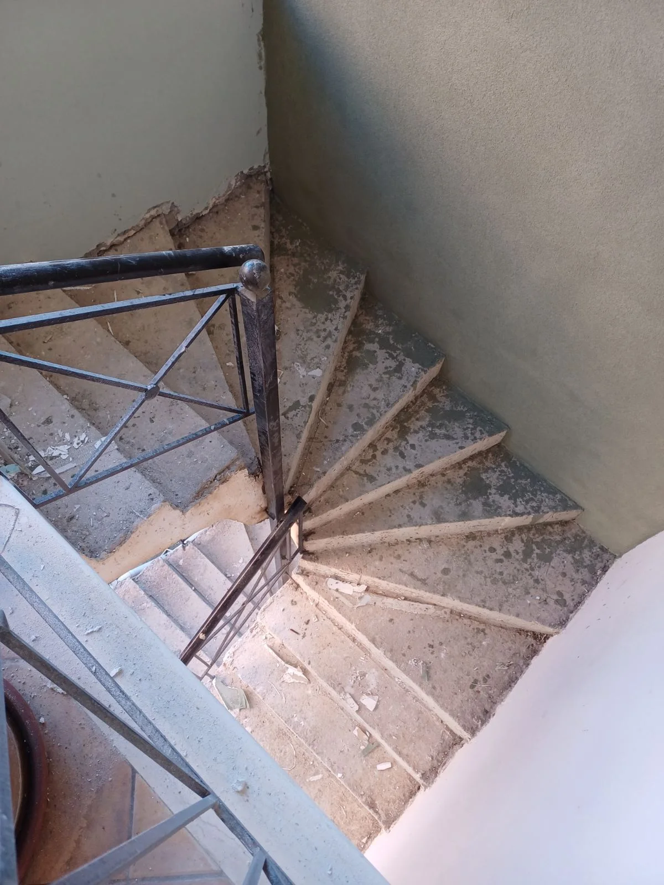
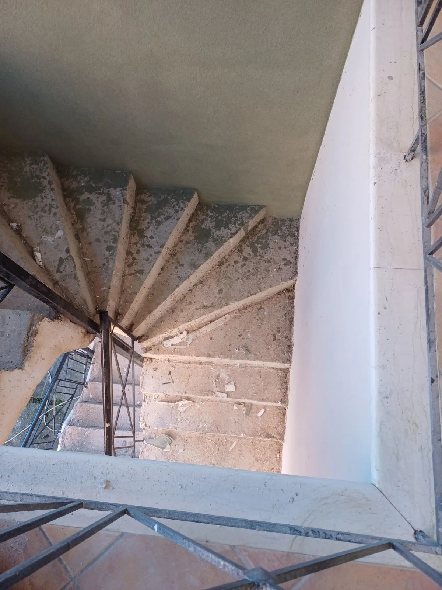
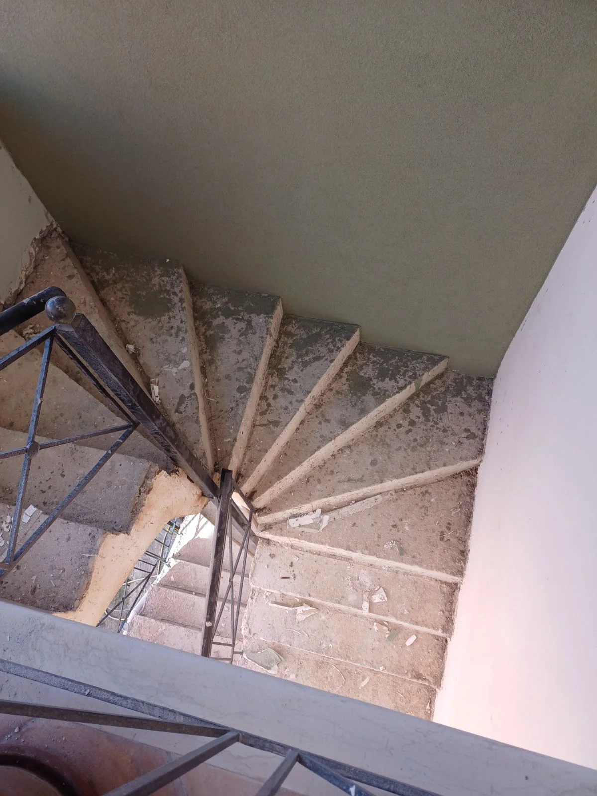

Skip to content
MI ARCHITECTS
Architecture · Construction
Home
Development
Construction
Services
Portfolio
Our Story
Contact
← All construction
Stair construction
The Turning Stair
03 images / Construction journal

View full image ↗
01
Geometry of the stair

View full image ↗
02
Formwork at the turn

View full image ↗
03
The stair in progress
Next project
Kathisma
↗
✕
←
→